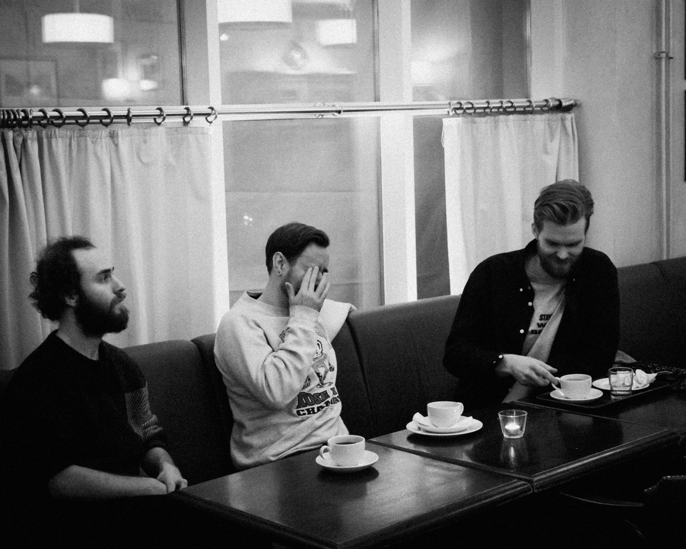

RAIDAT
Rokkia isolla R:llä.
Vuonna 2022 perustettu bändi julkaisi ensimmäisen maxisinkkunsa "Iggyn" huhtikuussa 2021.
Maxisinkun kaikki kolme kappaletta "En halua tietää", "Hasta la Vista" ja "Iggy" soivat valtakunnallisella radiokanavalla.
Yhtye ei ole vielä keikkaillut, mutta palaa halusta sytyttää suomen lavat tuleen.
Yhtyeen kappaleiden kuunteluiden jakauma. Kokonaiskuuntelut 9272 striimausta.